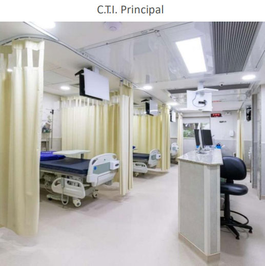
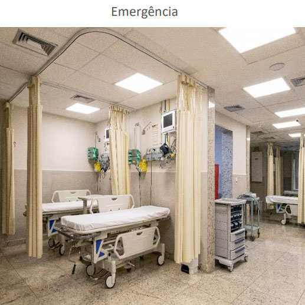
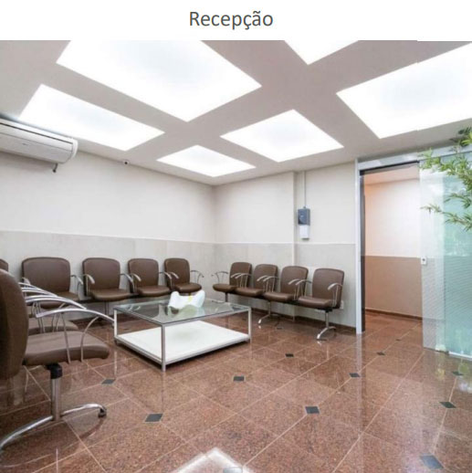

Exames de imagem
Tomografia computadorizada, radiologia geral, ultrassonografia, ecocardiograma e Doppler colorido com equipamentos de última geração.
Ver exames de imagem →Há mais de anos, a Casa de Saúde Pinheiro Machado oferece atendimento médico humanizado com emergência 24 horas, centro cirúrgico, CTI e diagnóstico por imagem em Botafogo, Zona Sul do Rio de Janeiro.
Precisa de atendimento agora? Nossa emergência funciona todos os dias, com classificação de risco.
Ligar (21) 2125-4882O que oferecemos
Estrutura própria para diagnóstico, tratamento e recuperação, do exame de imagem ao pós-operatório, sem precisar sair da unidade.
Tomografia computadorizada, radiologia geral, ultrassonografia, ecocardiograma e Doppler colorido com equipamentos de última geração.
Ver exames de imagem →Análises clínicas com infraestrutura própria e lista completa de exames laboratoriais disponíveis na unidade.
Consultar lista de exames →3 salas de cirurgia modernamente equipadas para procedimentos de pequeno, médio e grande porte, com destaque para traumatologia, urologia e cirurgia bariátrica.
Conhecer o centro cirúrgico →5 leitos individuais de repouso dedicados a procedimentos de Day-Clinic, com conforto e acompanhamento especializado.
Saber mais sobre o Day-Clinic →2 unidades de CTI com funcionamento 24 horas para pacientes que exigem cuidados intensivos e monitoramento contínuo.
Conhecer o CTI →Pronto-atendimento com triagem e classificação de risco, apoiado por exames laboratoriais e de imagem no mesmo local.
Conhecer a emergência →Por que escolher a CSPM
Exames de imagem, laboratório, centro cirúrgico e internação na mesma unidade, agilizando diagnóstico e tratamento.
Avaliação imediata e priorização por gravidade, garantindo atendimento mais ágil a quem mais precisa.
Mais de 65 operadoras e planos de saúde aceitos para emergência e exames de imagem.
Em Botafogo, Zona Sul do Rio, em frente ao Palácio Guanabara e próximo às estações de metrô Largo do Machado e Flamengo.
Assistência hospitalar humanizada, alicerçada na competência de equipes médicas e de enfermagem qualificadas.
Conheça a unidade
Instalações modernas e equipamentos de última geração para oferecer precisão no diagnóstico e segurança em cada etapa do tratamento.



Convênios médicos
São mais de 65 convênios aceitos para emergência, e uma lista específica para exames de imagem. Consulte seu plano antes do atendimento.
Não encontrou seu convênio na lista acima? Veja a lista completa de convênios →
Depoimentos
"Fui muito bem atendido na emergência, com rapidez na triagem e atenção da equipe durante todo o processo."
"Fiz meus exames de imagem no mesmo dia da consulta. Estrutura organizada e equipe atenciosa do início ao fim."
"Acompanhei um familiar internado no CTI e senti segurança com as informações passadas pela equipe médica diariamente."
Dúvidas frequentes
Sim. A emergência funciona 24 horas por dia, todos os dias da semana, com serviço de triagem e classificação de risco para priorizar o atendimento conforme a gravidade de cada caso.
A CSPM atende mais de 65 operadoras e planos de saúde para emergência, além de uma lista específica de convênios para exames de imagem. Consulte a página de Convênios ou ligue para (21) 2125-4882 para confirmar seu plano.
Os resultados de exames podem ser acessados online, de forma imediata, através do nosso portal de laudos.
Os horários variam por tipo de acomodação: apartamentos (08h às 21h), enfermaria (14h às 17h) e CTI (11h às 12h, diariamente). Consulte todos os detalhes na página de Horários de Visita.
Estamos na Rua Pinheiro Machado, 155, em Botafogo, Zona Sul do Rio de Janeiro, em frente ao Palácio Guanabara e próximos às estações de metrô Largo do Machado e Flamengo.
O centro cirúrgico conta com 3 salas equipadas para procedimentos de baixa e média complexidade, com destaque para cirurgias traumatológicas, urológicas e bariátricas.
Localização
Localização privilegiada em Botafogo, em frente à Sede do Governo do Estado (Palácio Guanabara) e próxima às estações de metrô Largo do Machado e Flamengo.